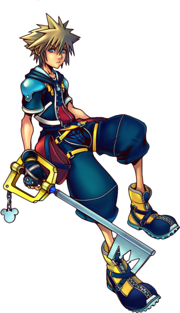
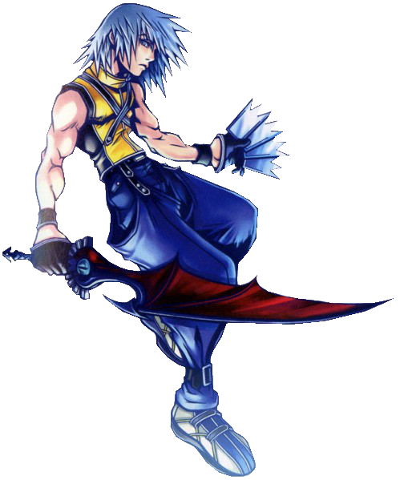
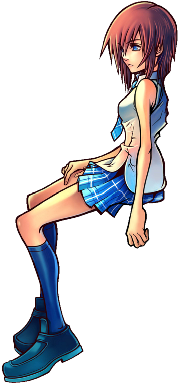

Sora es el protagonista principal de la saga, excepto en Birth By Sleep y 358/2 Days, Sora es un muchacho optimista al que le encanta la compañia de sus amigos, es el elegido de la Llave Espada, un arma legendaria que no todos poseen. Creció en una pequeña isla llamada Isla del Destino junto con sus mejores amigos Riku y Kairi. Hasta que un día el destino lo llamó, ahora recorre los diferentes mundos a favor de la luz luchando contra la oscuridad. Durante los acontecimientos de Kingdom Hearts Birth By Sleep tiene 4 años, durante Kingdom Hearts y Kingdom Hearts: Chain Of Memories tiene 14 y durante Kingdom Hearts 2 en adelante tiene 15. La palabra Sora significa "cielo" en japonés.

Riku
Riku es el mejor amigo de Sora y Kairi, siempre ha tenido un porte atlético y ha tenido una actitud despreocupada sobre todo en las primeras entregas, ya que Riku ha sufrido diferentes cambios de personalidad a través de la saga. En Kingdom Hearts Birth By Sleep tiene 5 años, en Kingdom Hearts 15 y en Kingdom Hearts 2 en adelante 16. Al principio Riku cayó en un vacío de oscuridad, siendo poseido por Ansem, uno de los villanos de la saga,. Al final de Kingdom Hearts, Riku se uniría al Rey Mickey y llegaría a adoptar el titulo de Maestro de la Llave Espada.

Kairi
Kairi es amiga de Sora y Riku, al igual que ellos vivía en las Islas del Destino hasta su destrucción, es una de las 7 princesas de la luz y tiene la misma edad que Sora. La palabra Kairi proviene del Japonés "Mar" aunque también es homofono con la frase "milla nautica". Durante los acontecimientos de Kingdom Hearts 2, Kairi obtiene habilidad con la llave espada y actualmente está practicando para llegar a ser portadora de la Llave Espada como todos sus amigos.
